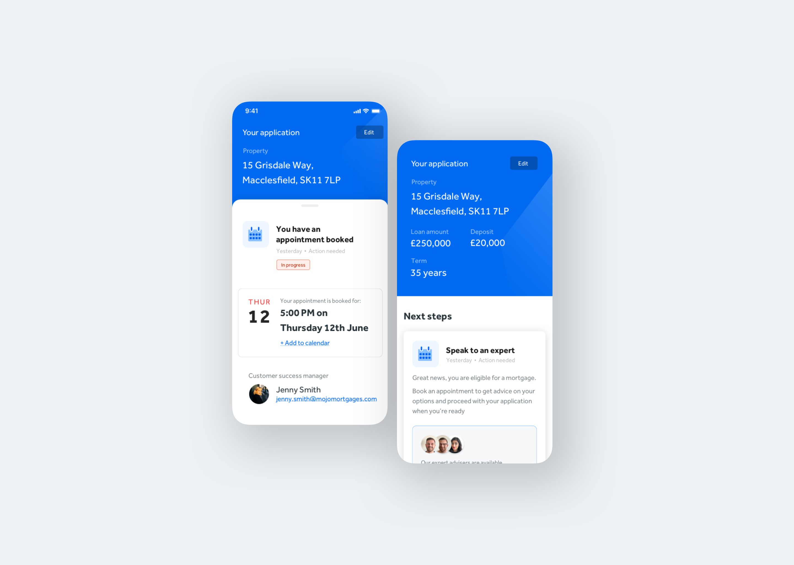
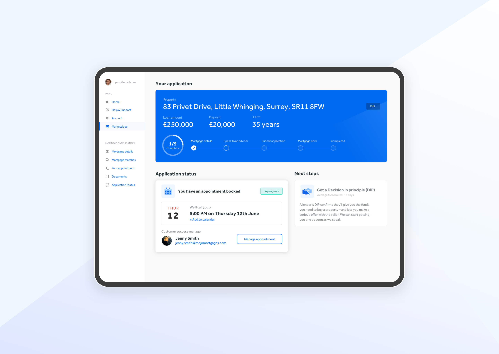

The Problem
Tools used:
Sketch, Storybook, HTML/CSS/React
Introduce design thinking and user research best practices to help improve Mojo's current product
offering. Establish
'Design Ops' processes to facilitate the growth of design within Mojo.
Run discovery and mapping workshops to shape the product roadmap, making sure we're always working
on the
'right' thing at the right time. My job was to be the voice of the user and custodian of Mojo's
visual output.

Research
Mojo have been making the majority of their product decisions based on
quantitive data. Tools like Google analytics, Power BI, Google optimise provided a wealth of raw
data, however, trends weren't being tracked, the data wasn't being pooled or reviewed. As a result
it becomes
increasingly hard to paint a clear picture of what success looks like for the product.
This also means that whilst Mojo knows a lot about 'how' someone uses their product, they know very
little of the 'why'. My task was to try and balance out Mojo's research debt by introducing more
qualitative user research methods such as; user
interviews, feedback channels, a way for users to self-serve common
questions and eventually, run remote usability tests.
The diagrams below were part of an audit of Mojo's current research landscape. The outcome of which
was
identifying that there are clear gaps, a 'monoculture' of research had begun to emerge.

 Back to top
Back to top